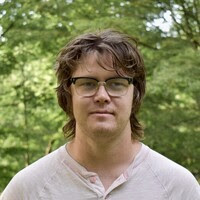

Worked as a summer intern at The Hyattsville Life and Times covering topics ranging from education to local government on both the city and county level. This involved interviewing local politicians and leaders in Hyattsville and Prince Geroge’s County, and covering events county wide.
Covered Baltimore for Capital News Service. Our coverage focused on Baltimore’s economic recovery post Key Bridge collapse, and involved interviewing high-profile business leaders in the community, as well as small local businesses
Worked with The Bowie Sun in the Spring of 2025 covering local small business and the city government.